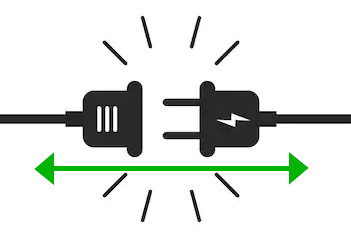
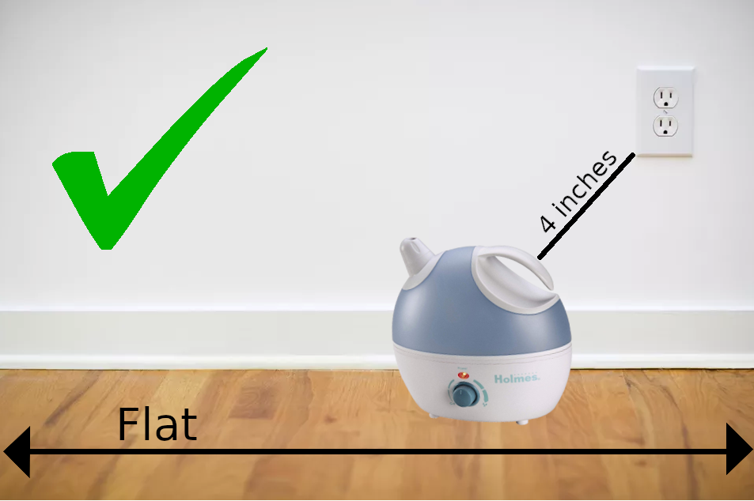
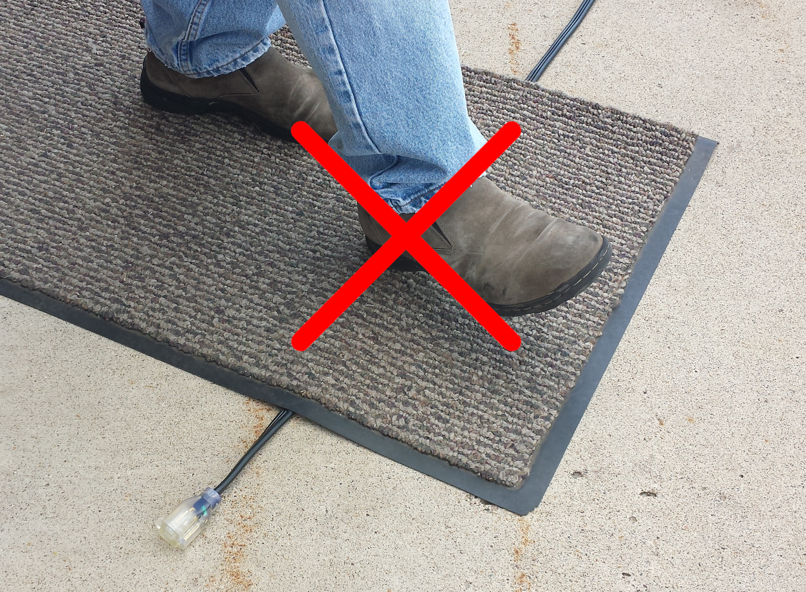

Humidifier: Instructions of Use
Warning

- Do not attempt to refill humidifier without first unplugging the unit from its electrical outlet. It may cause injury.
What To Do

- Place dehumidifier on an inside wall near an electrical outlet. (4 inches from the wall for best results)
- Place dehumidifier on a firm, flat, level surface. (A waterproof mat or pad is recommended to place under dehumidifier)
- Unplug when not in use.
- Only use dehumidifier for its intended purpose.
- In case of malfunctions, return to manufacturer for repair. Attempting to repair/adjust the device will void your warranty.
What Not To Do
- Do not place the cord under rugs.
- Do not block air inlet or outlet.
- Do not place dehumidifier near heat sources (such as stoves, radiators, and heaters).
- Do not place dehumidifier near an area where it is accessible to children.
- Do not drop or insert any objects into any openings.
- Do not use the appliance with a damaged cord/plug, if it malfunctions, or if it has been damaged.
- Do not place dehumidifier on a rug, carpet, or finished floor that could be damaged if exposed to water or moisture.
- Do not tilt, move, or attempt to empty unit while it is operating; unplug first.
